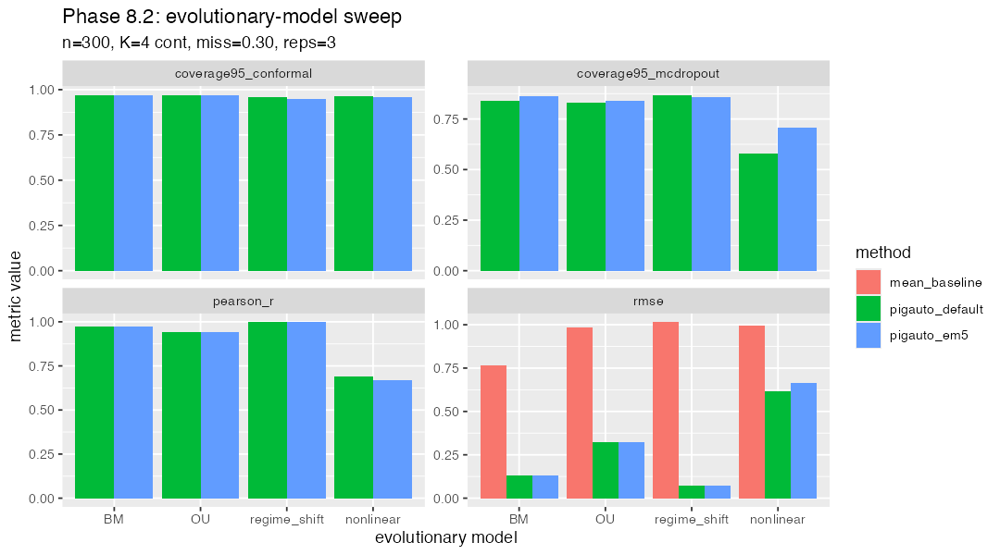

Models: BM, OU, regime_shift, nonlinear. n=300, K=4, miss_frac=0.30, 3 reps.
Total wall: 23.7 min.

| method | model | metric | mean value |
|---|---|---|---|
| pigauto_default | BM | pearson_r | 0.974 |
| pigauto_em5 | BM | pearson_r | 0.975 |
| pigauto_default | nonlinear | pearson_r | 0.694 |
| pigauto_em5 | nonlinear | pearson_r | 0.693 |
| pigauto_default | OU | pearson_r | 0.944 |
| pigauto_em5 | OU | pearson_r | 0.944 |
| pigauto_default | regime_shift | pearson_r | 0.997 |
| pigauto_em5 | regime_shift | pearson_r | 0.997 |
| mean_baseline | BM | rmse | 0.764 |
| pigauto_default | BM | rmse | 0.127 |
| pigauto_em5 | BM | rmse | 0.126 |
| mean_baseline | nonlinear | rmse | 0.997 |
| pigauto_default | nonlinear | rmse | 0.626 |
| pigauto_em5 | nonlinear | rmse | 0.627 |
| mean_baseline | OU | rmse | 0.986 |
| pigauto_default | OU | rmse | 0.318 |
| pigauto_em5 | OU | rmse | 0.318 |
| mean_baseline | regime_shift | rmse | 1.014 |
| pigauto_default | regime_shift | rmse | 0.070 |
| pigauto_em5 | regime_shift | rmse | 0.069 |